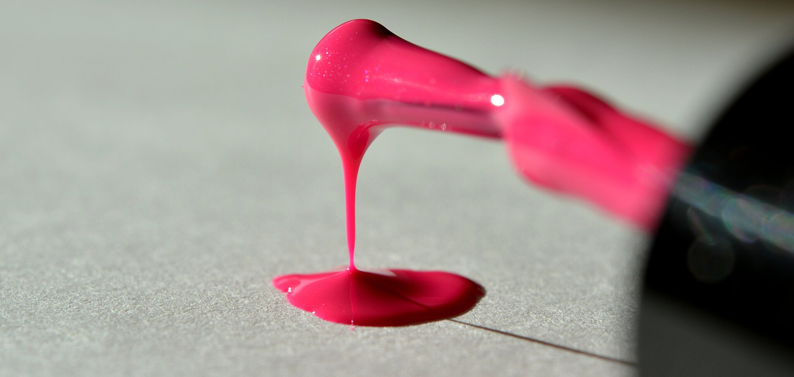
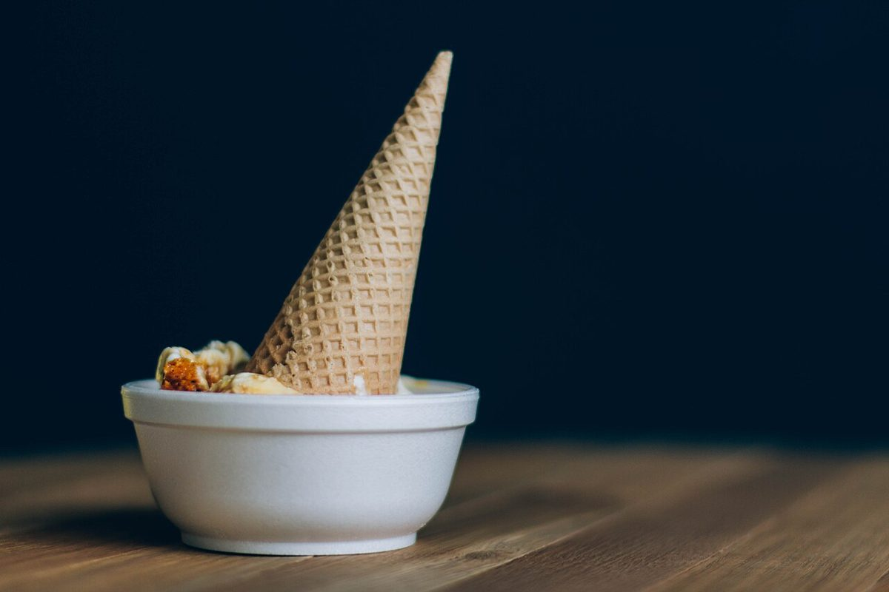
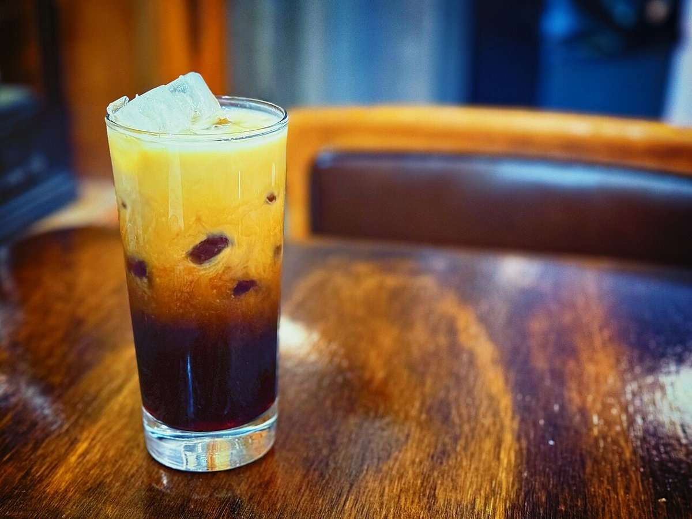
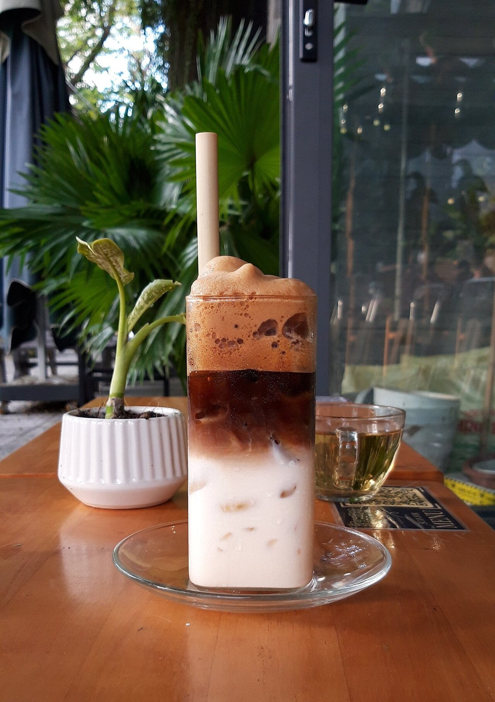
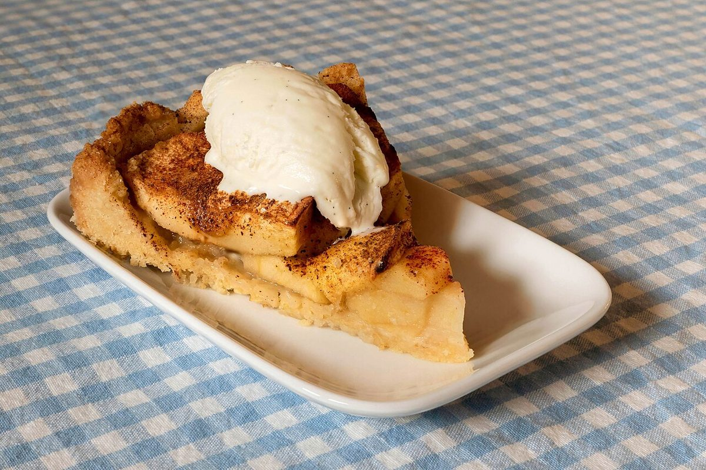
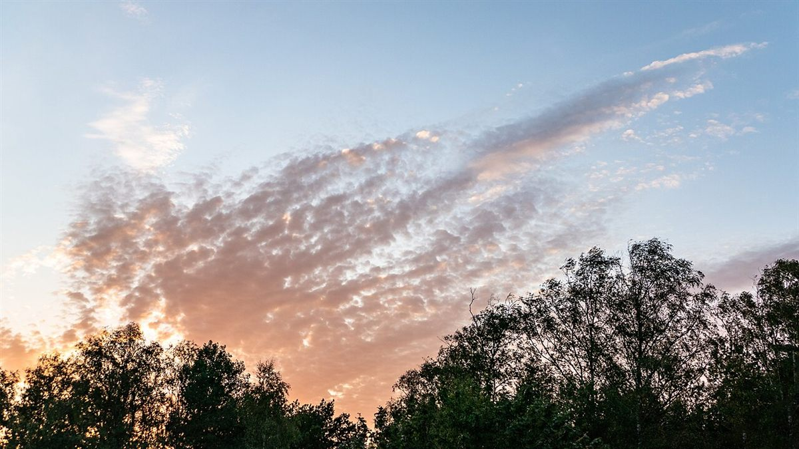

ABOUT
ネイルサロンから生まれた、
笑顔のアイススタンド
- 店主はネイリストのAKOさん。ネイルサロン「ALIA」を営んでいます。
- 2020年9月5日にオープン。ALIAのデザイン感覚を生かしたポップなアイススタンドとして生まれました。
- 「人をワクワクさせたい」「笑顔になってもらいたい」という想いと、「片手で食べれて、写真が撮れる」というコンセプトが紹介されています。
- 場所は津田の海や公園のそば。散歩のついでに立ち寄れる距離感です。
※上記は2020年当時の取材記事等の内容です。現在の営業状況はInstagramでご確認ください。「NICO」の名前の意味は記事では明言されていません。

MENU
カラフルなアイスとドリンク
当時の記事では、カラフルなアイス(カップ・コーン)やドリンクが紹介されていました。寒い時期はスープとパンの予定もあったようです。現在の内容・価格は準備中です。








ACCESS
アクセス
| 住所 | 〒769-2401 香川県さぬき市津田町津田１４０２−１３ |
|---|---|
| 電話 | 準備中 |
| 営業時間 | 準備中(最新情報はInstagramでご確認ください) |
| 定休日 | 準備中 |
| @nico_byalia |


掲載の写真はフリー素材のイメージであり、店舗の実際の様子ではありません。
写真クレジット
- images/gelato.jpg 「Icecream Gelato」 JESHOOTS.com / CC0 1.0 / 撮影地: 不明
- images/melting.jpg 「Melting Ice Cream (Unsplash)」 Evan Kirby / CC0 1.0 / 撮影地: 不明
- images/icebar.jpg 「Ice Cream Treat (Unsplash)」 Joseph Gonzalez / CC0 1.0 / 撮影地: 不明
- images/affogato.jpg 「Black coffee cup (Unsplash)」 Ross Parmly / CC0 1.0 / 撮影地: 不明
- images/harbor.jpg 「Kuchō, Ikata at sunset」 Amake / CC BY-SA 3.0 / 撮影地: 愛媛県伊方町
- images/raspberry.jpg 「Chocolate raspberry dessert」 Funknendai / CC0 1.0 / 撮影地: 不明
- images/applecake.jpg 「Apple cake with vanilla ice cream 2」 W.carter / CC0 1.0 / 撮影地: スウェーデン
- images/mocha.jpg 「Mocha Cake - Djanogly Café, Tate Britain」 Andy Li / CC0 1.0 / 撮影地: 英国ロンドン
- images/nail.jpg 「Nail polish brush pink」 Patrik Nygren / CC BY-SA 2.0 / 撮影地: 不明
- images/clouds.jpg 「Pastel clouds at sunset in Tuntorp」 W.carter / CC BY-SA 4.0 / 撮影地: スウェーデン
- images/iced1.jpg 「Iced Coffee in Glass - Sunshine Coffee - Laramie Cafe (53838344552)」 Tony Webster / CC BY 2.0 / 撮影地: 米国ワイオミング州
- images/iced2.jpg 「Iced Bạc Xỉu served in tall glass on the table in tha cafe, Danang city, 2023」 Klientos / CC BY-SA 4.0 / 撮影地: ベトナム・ダナン
- images/ice.jpg 「Ice cubes in a glass」 Nattu / CC BY 2.0 / 撮影地: 不明